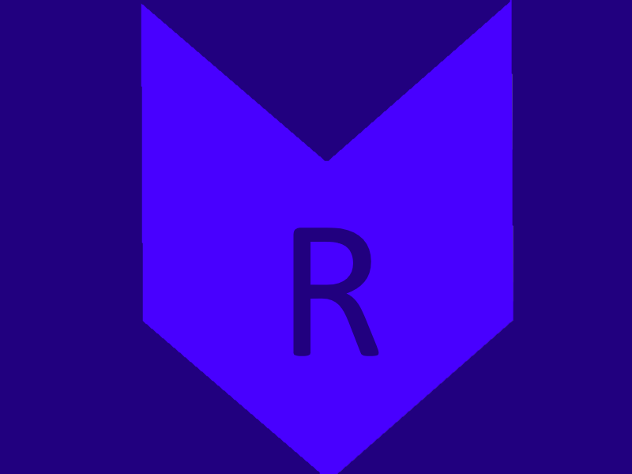

Pat foundation
RinOS
RinOS to Dystrybucja Linuxa oparta na Linuksie Mint domyślnym środowiskiem graficznym jest Cinnamon sama dystrybucja jest następcą dystrybucji Bird OS która nigdy nie powstała
RinOS to Dystrybucja Linuxa oparta na Linuksie Mint domyślnym środowiskiem graficznym jest Cinnamon sama dystrybucja jest następcą dystrybucji Bird OS która nigdy nie powstała